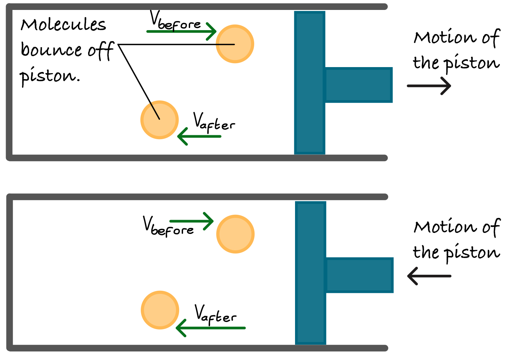
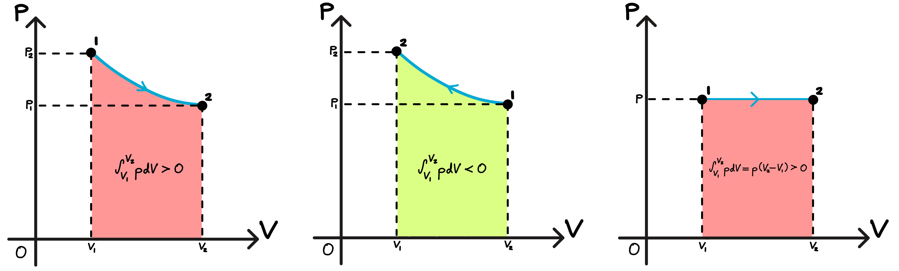

4. The First Law of Thermodynamics#
Relevant readings and preparation
Concepts in Thermal Physics: Chapter 11, 12
University Physics with Modern Physics 15th edition: Chapter 6.1-6.3, Chapter 7.3, Chapter 19
Learning outcomes:
Explain the role and importance of thermodynamic systems and processes.
Calculate the work performed by a system during volume changes.
Define what is meany by a path between thermodynamic states.
Interpret and apply the first law of thermodynamics.
Identify and describe four key types of thermodynamic processes.
Explain why the internal energy of an ideal gas depends only on temperature.
Distinguish between molar heat capacities at constant volume and at constant pressure.
Analyze adiabatic processes in an ideal gas.
4.1. Review: Work#
Conservation of energy is fundamental to thermodynamics because it governs how energy is transferred and transformed within a system. It provides the basis for the first law of thermodynamics, which relates changes in internal energy to heat added to a system and work done by the system. By applying energy conservation, we can distinguish between energy stored internally and energy exchanged as work or heat, enabling a consistent understanding of thermodynamic processes and their limits.
Work is done by exerting a force on an object, whilst the object is moved from one position to another. There is a displacement of the object as in The work done by a constant force acting in the same direction as the displacement..

Fig. 4.1 The work done by a constant force acting in the same direction as the displacement.#
Work measures the energy transferred by a force acting through a process of displacement. When an object moves a distance in a straight line under a constant force which acts in the same direction as the displacement, the work done is simply:
From 4.1, we can see that work can be increased by amplifying the force or by applying the same force over a greater distance.
Sign of work:#
The sign of the work depends on the relative angle of the force to the object that is being displaced. The figure below helps to illustrate how this works:

Fig. 4.2 The work done by a constant force acting at an angle to the diplacement.#
With vector representations for the quantities involved, \(\vec{F}\) & \(\vec{s}\), we can produce two other equivalent statements for work:
where \(\phi\) is the angle between \(\vec{F}\) and \(\vec{s}\). If \(\phi=0\), so that \(\vec{F}\) and \(\vec{s}\) act in the same direction, then \(\cos(\phi)=1\) and we regain Eq. 4.1.
Eq. (4.2) has the form of a scalar product of two vectors, meaning it can be equivalently represented as a dot product of two vectors:
Work has magnitude but no intrinsic direction. This is true despite work being defined in terms of vector quantities. A 5 N force acting eastward on an object that then moves 6 m east does the same amount of work as a 5 N force acting northward on an object which then moves 6 m north.
The sign of the work encodes the direction of energy transfer between the system and its surroundings. Once a sign convention is fixed, positive and negative values of work correspond to different physical situations. In this convention,
positive work, \( W > 0 \), represents energy transferred to the system by the surroundings
negative work, \( W < 0 \), represents energy transferred from the system to the surroundings.
The work-energy theorem#
The total work done on an object by external forces is linked to its displacement, but its physical importance lies in how it changes the object’s speed. Work is positive when the net force has a component in the direction of motion, negative when it opposes the motion, and zero when the net force lies perpendicular to the displacement (or when no force is applied, of course).
Thus, work provides a direct quantitative measure of how forces modify motion. The kinetic energy of a particle is defined as:
where \(m\) is the mass of said particle, and \(v\) is its velocity. Like work, kinetic energy is a scalar quantity, independent of the direction of motion; although in this case it is always non-negative (\(K \geq 0\)), only becoming zero when the particle is at rest.
For motion along a straight line under a constant net force, combining Newton’s second law with kinematics shows that the work done by the net force over a displacement equals the difference between the final and initial kinetic energies:
This theorem states that the total work done by all forces acting on a particle simply equals its overall change in kinetic energy. If the net work is positive, \(\Delta K\) is also positive and the particle speeds up. The reverse is true if work is negative, and if work is zero then the particle’s speed is unchanged even though forces may be acting.
Although derived for a straight-line motion with constant forces, the work-energy theorem is valid for more general motions and force laws, provided the analysis is carried out in an inertial reference frame.
Note that if an object is displaced from rest (e.g. a billiard ball), then the work-energy theorem is simply:
Work and energy with varying forces#
Above, work was defined for constant forces. In many physical situations however, the force varies in magnitude and/or direction along the path of motion. The work-energy theorem remains valid even in these cases.
Consider motion along the x-axis, where the x-component of the force, \(F_x(x)\), varies with position. We can divide the displacement from \(x_1\) to \(x_2\) into small segments \(\Delta x\), where we can linearly approximate the work done over each segment:
this would allow us to approximate the total work by summing over each of these segments…
The exact expression is given in integral form, in the limit of \(\Delta x \rightarrow 0\):
Graphically, this work equals the area under the \(F_x(x)\) curve between \(x_1\) and \(x_2\). For a constant force \(F_x\), this reduces to \(W = F_x(x)(x_2 - x_1)\).
Spring Force (Hooke’s Law)#
For an ideal spring stretched or compressed along \(x\), \(F_x = kx\) where \(k\) is the spring constant.
What is the work being done by stretching a spring from \(x=0\) to \(x\)?
The work done between the two positions \(x_1\) and \(x_2\) is:

Fig. 4.3 (Left): Diagram displaying the force needed to stretch an ideal spring, which is proportional to the spring’s elongation: \(F_x = kx\). (Right): The corresponding Hooke’s law graph used to calculate the work done to stretch the spring a distance \(x\).#
The work done to take an elongated spring from position \(x_1\) to \(x_2\) (\(x_1 < x_2\)) is:

Fig. 4.4 Calculating the work done to stretch a spring from one elongation to a greater one.#

Fig. 4.5 The corresponding trapezoid which can be integrated to calculate the energy required for further stretching of the spring. The work here is given by \(W = \tfrac{1}{2}k(x_2^2 - x_1^2)\).#
Therefore, the work-energy theorem indeed holds for scenarios where the driving force varies with position.
We can also extend the work-energy theorem for motion along a curve, in which a force varies in direction as well as magnitude, and thus the displacement lies along a curved path. Consider the scenario depicted in the figure below:

Fig. 4.6 A particle moves along a curved path from point \(P_1\) to \(P_2\) acted on by a force \(\vec{F}\) that varies in magnitude and direction.#
For a particle moving from point \(P_1\) to \(P_2\) along a curve:
Divide the path into infinitesimal vector displacements \(dl\), each tangential to the path.
Let \(F\) be the force at a point along the path.
Only the component of the force parallel to the displacement does work.
The differential work is:
Phi is the angle between \(F\) and \(dl\), and \(F_{\parallel} = Fcos(\phi)\) is the force component along the path. The total work done as the particle moves from P1 to P2 is therefore:
This is a line integral, and it accounts for both the changing direction of motion and the changing force along the path. The work-energy theorem holds generally - by summing up the infinitesimal work \(dW = Fdl\) over all segments of a curved path, the total work equals the total change in kinetic energy \(W_{tot} = \Delta K = K_2 - K_1\), regardless of how the force varies.
Only the component of the force parallel to the path does work and changes the particle’s speed, while the perpendicular component changes only in the direction of motion.
4.2. Review: Internal Energy#
\(\underline{\text{Conservation forces:}}\) The work done by a conservative force has the following characteristics:
It can be written as the difference between the final and initial values of a potential energy function.
The work is reversible: reversing the motion reverses the sign of the work.
The work is independent of the path taken and depends only on the starting and ending points.
The total work done over any closed path is zero. (A closed path is a path that returns to its initial state.)
When only conservative forces do work, the total mechanical energy (the sum of kinetic and potential energy, \(E_\text{mech}=K+P\)) is conserved. Examples include the gravitational force, spring force and the electric force.
\(\underline{\text{Nonconservative forces:}}\) Not all forces are conservative. Friction and fluid resistance do negative work regardless of the direction of motion, so the work done over a closed path is not zero and the lost kinetic energy cannot be recovered; hence, mechanical energy is not conserved and no potential energy can be defined for these forces. Such forces are categorised as being nonconservative, and many are dissipative, converting mechanical energy into other forms. Some nonconservative forces, like explosive or chemical forces, can increase mechanical energy in irreversible processes.
In other words, nonconservative forces can either dissipate mechanical energy (like friction) or generate mechanical energy by converting other forms of energy (like chemical potential) into motion - in both cases, the process cannot be undone.
\(\underline{\text{Conservation of Energy:}}\) Non-conservative forces, such as friction, cannot be described by a potential energy function. However, their effects do not violate the law of conservation of energy. To account for them, we introduce the concept of internal energy, denoted, \(U_\text{int}\).
Internal energy is the energy associated with the microscopic motion and interactions of the particles which make up a system. Increasing the temperature of a system increases its internal energy; decreasing the temperature lowers it.
Consider a system on which friction does negative work, such as a block sliding across a rough surface. The system slows down, so its kinetic energy decreases. However, experiments show that this “lost” mechanical energy has not disappeared. Instead, it is converted into internal energy and its surroundings. Quantitatively, this is expressed as:
where \(W_\text{other}\) is the work done by non-conservative forces (such as friction) and \(\Delta U_\text{int}\) is the resulting change in internal energy. We can now write the total energy of the system as the sum of its kinetic energy \(K\), potential energy \(P\), and internal energy \(U_\text{int}\). The law of the conservation of energy requires that the total energy remains constant:
Rearranging and rewriting this in terms of differentials (e.g. \(\Delta K - K_2 - K_1\)) explicitly yields:
This is the general statement of energy conservation: although energy may be transferred between kinetic, potential and internal forms, the total energy of a closed system is conserved. A useful consequence follows immediately; if no energy is transferred into internal energy (for example, when only conservative forces act) then \(\Delta U_\text{int} = 0\), and the familiar result
is recovered. In this special case, mechanical energy is conserved.
Work done during volume changes#
In thermodynamics, work is defined generally as energy transferred across a system boundary by any means other than heat. Expressions such as force multiplied by displacement arise as special cases of this definition when analysing mechanical systems, but it can be considered more generally as part of the thermodynamic framework.
Now lets take the concept of work and apply it to a thermodynamic system (any collection of objects or matter that is conveniently treated as a single unit for analysis, and that may exchange energy with its surroundings).

Fig. 4.7 A thermodynamic system may exchange energy with its environment by means of heat, work, or both. Note the sign conventions for \(Q\) and \(W\).#
Consider a simple example of a thermodynamics system, a gas enclosed in a cylinder with a moveable piston. This system is coming in engines (e.g. internal combustion) and compressors (e.g. in refrigerators).
{kind=link}

Fig. 4.8 A molecule striking a piston (a) does positive work if the piston is moving away from the molecule at the time of the collision, and (b) does negative work if the piston is moving towards the molecule at the time of the collision. Hence, a gas does positive work when it expands as in (a) and negative work when it compresses as in (b).#
When a system such as a gas changes volume against a moveable piston, it can do work on its surroundings. An expanding gas pushes the piston outward and does positive work; whilst when the piston moves inward and the gas is compressed, work is being done on the gas (this can also be thought of as the gas doing negative work). At the molecular level, work only occurs when gas molecules collide with a moving piston, not a stationary wall.

Fig. 4.9 The infinitesmal work done by the system during the small expansion \(dx\) is \(dW = pA \ dx\).#
See the figure above, which shows a system (gas, liquid, solid) in a hollow cylinder with one end enclosed with a moveable piston. The piston has a cross-sectional surface are equivalent to the cylinder (\(A\)), and the enclosed gas exerts a pressure \(p\) on the piston face. The total force exerted on the piston is \(F=pA\). If in response to this force the piston moves an infinitesimal distance \(dx\), the work done in this process is:
Since \(Adx = dV\), where dV is the infinitesimal volume change of the system, the work done by the system in this infinitesimal volume change is simply re-expressed as:
In a finite change of volume, \(V_1\) to \(V_2\):
During a volume change, the system pressure generally varies, so evaluating Eq. (4.13) requires knowledge of the pressure-volume relationship \(p(V)\). This work is represented graphically on a pV-diagram (see Chapter 3) as the area under the \(p(V)\) curve between the points \(V_1\) and \(V_2\).
For expansion (\(V_2 > V_1\), the area is positive and the system does positive work on its surroundings. For a compression (\(V_2 < V_1\)), the area is negative and the system does negative work. In the special case where pressure is constant throughout the whole process, Eq. (4.13) reduces to:
For situations where the volume is constant, \(dV = 0\) and hence no work is done.
{kind=link}

Fig. 4.10 The work done equals the area under the curve on a pV-diagram.#